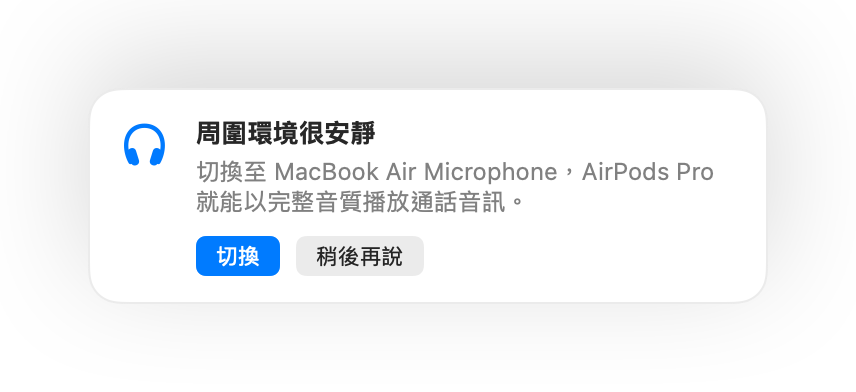

為什麼 AirPods 在 Mac 通話時音質會變差
戴著 AirPods 加入通話時，聲音突然變得乾癟沉悶？這不是故障。當有 App 使用 AirPods 的麥克風時，藍牙會將 AirPods 切換到通話模式，導致所有播放音質大幅下降。
解決方法是改用 Mac 內建麥克風發言，讓 AirPods 專注於音訊播放。在安靜的環境中，Mac 麥克風收音同樣清晰，通話音質也能恢復完整高水準。Muffle 能偵測環境是否安靜並主動建議切換。
免費試用 Muffle 3 天即將在 Mac App Store 推出
在通話中保持完整高音質
- 安裝 Muffle 並保持開啟「根據環境建議最佳麥克風」。
- 像平常一樣戴著 AirPods 加入通話。
- 當 Muffle 提示周圍環境很安靜時，點一下「切換」。
- 如果稍後環境變得吵雜，Muffle 會再次建議切換回 AirPods 麥克風。

- 這項切換適用於通話 App 使用系統預設麥克風的情況。在 Google Meet、Zoom 和 Teams 中，請將麥克風選擇為「預設」或「與系統相同」。
- 使用 Mac 麥克風時請靠近電腦。Muffle 只會在能清晰收到你的聲音時才提供建議。
常見問題
為什麼 AirPods 在 Mac 通話時音質很差？
藍牙頻寬無法同時傳輸高音質立體聲與你的聲音，因此只要使用麥克風，AirPods 就會自動降級至通話模式。
Muffle 會自動切換麥克風嗎？
不會。Muffle 只會建議更合適的麥克風。除非你點一下「切換」，否則不會變更任何設定。